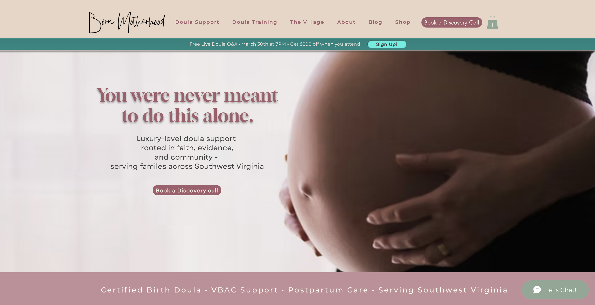

Simplified navigation.
We organized information into clearer pathways so visitors could quickly find the resources and support that matched their needs.

Case Study
Creating a clearer digital home for a growing motherhood community built around connection, support, and real-life resources.
View Live Site
The Challenge
Born Motherhood was growing, but the website needed to better support the experience people were looking for when they arrived.
Visitors needed clearer pathways into programs, community resources, and opportunities to connect without feeling overwhelmed by information.
The Strategy
We organized information into clearer pathways so visitors could quickly find the resources and support that matched their needs.
The website was restructured to communicate the mission, purpose, and value of the community more clearly.
Every design decision focused on helping visitors feel welcomed, supported, and confident about taking the next step.
The Outcome
The final result created a stronger foundation for growth while making it easier for visitors to understand the mission and engage with the community.
Visitors can more easily navigate resources, programs, and opportunities for connection.
The website better reflects the heart of the organization and the people it serves.
Clear calls-to-action help visitors understand exactly where to go next.
Project Snapshot
What This Project Demonstrates
When people are looking for support, clarity matters. The goal of this project was creating an experience that felt welcoming, trustworthy, and easy to navigate from the first click.
Born Motherhood ProjectYour Story Next
If you have built something meaningful, your website should help people understand it, trust it, and know exactly where to start.
Start a Project